Até este ponto, focalizamos lições individuais que, juntas, o preparam para o sucesso na visualização e comunicação eficaz com dados. Para refrescar sua memória, abordamos as seguintes lições:
Neste capítulo, vamos ver o processo completo do storytelling com dados, do começo ao fim — aplicando cada uma das lições anteriores —, usando um único exemplo.
Vamos começar considerando a Figura 8.1, que mostra o preço de revenda médio no decorrer do tempo de cinco produtos (A, B, C, D e E). Examine-a por uns instantes.
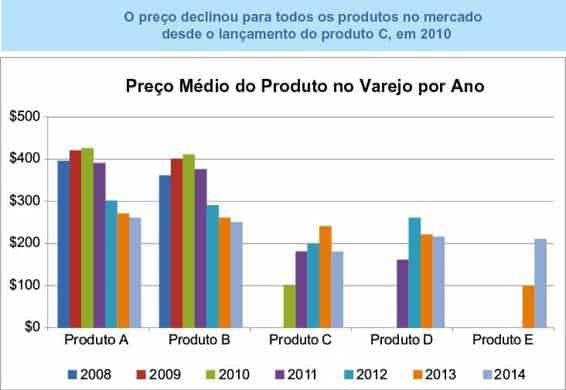
FIGURA 8.1 VISUAL ORIGINAL
Ao vermos esse gráfico, é fácil começar a decompô-lo. Mas antes de discutirmos a melhor maneira de visualizar os dados mostrados na Figura 8.1, vamos voltar um pouco e considerar o contexto
A primeira coisa a fazer ao se deparar com um desafio de visualização é certificar-se de ter um sólido entendimento do contexto e do que você precisa comunicar. Devemos identificar um público específico e o que ele precisa saber ou fazer, e escolher os dados que vamos usar para ilustrar nosso caso.
Devemos elaborar a Grande Ideia.
Neste caso, vamos supor que trabalhamos em uma startup que criou um produto para o consumidor. Estamos começando a pensar no preço que o produto deve ter. Uma das considerações nesse processo de tomada de decisão — que enfocaremos aqui — é como os preços de revenda dos produtos da concorrência nesse mercado mudaram no decorrer do tempo. Há uma observação no visual original que pode ser importante: “O preço declinou para todos os produtos no mercado desde o lançamento do produto C, em 2010”.
Para considerarmos especificamente quem, o quê e como, vamos presumir o seguinte:
Quem: vice-presidente de produto, o principal tomador de decisão no estabelecimento do preço de nosso produto.
O quê: entender como os preços dos concorrentes mudaram no decorrer do tempo e recomendar uma faixa de preço.
Como: mostrar o preço médio no varejo no decorrer do tempo, dos produtos A, B, C, D e E.
Então, a Grande Ideia poderia ser algo como: com base na análise dos preços no mercado no decorrer do tempo, para sermos competitivos, recomendamos introduzir nosso produto a um preço de varejo na faixa de R$ABC a R$XYZ.
A seguir, vamos considerar alguns modos diferentes de visualizar esses dados.
Uma vez identificados os dados que queremos mostrar, a seguir vem o desafio de determinar a melhor maneira de visualiza-los. Neste caso, estamos mais interessados na tendência do preço no decorrer do tempo para cada produto. Se olharmos a Figura 8.1, a variação nas cores entre as barras desvia a atenção disso, tornando o exercício mais difícil que o necessário. Seja paciente comigo, enquanto fazemos iterações na aparência desses dados, mais do que você normalmente faria. A progressão é interessante, porque ilustra como diferentes visões dos dados podem influenciar no que você presta atenção e nas observações que podem ser feitas facilmente.
Primeiro, vamos remover o obstáculo visual da variação na cor e ver o gráfico resultante, mostrado na Figura 8.2.
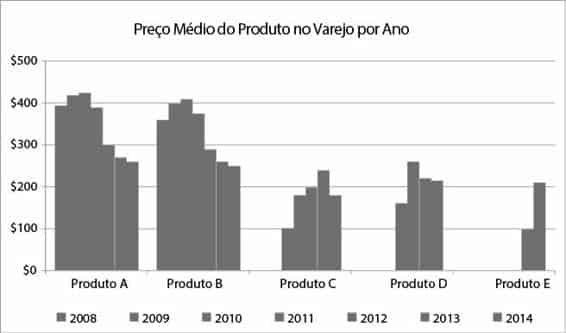
FIGURA 8.2 REMOVA A VARIAÇÃO NA COR
Se você ficou tentado a continuar a organizar neste ponto, não está sozinho.
Eu tive que resistir ao impulso, pois isso é algo que normalmente faço. Neste caso, vamos deixar para fazer isso na próxima seção, na qual poderemos tratar disso tudo de uma vez.
Como a ênfase no título original era o que aconteceu desde que o produto C foi lançado em 2010, vamos realçar os dados relevantes para facilitar a concentração de nossa atenção nisso por um momento. Veja a Figura 8.3.
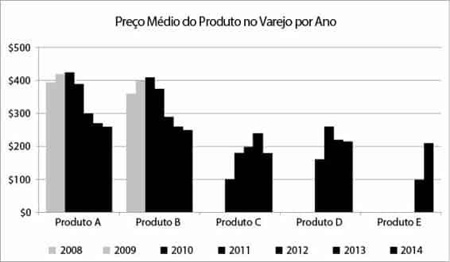
FIGURA 8.3 ENFATIZE DE 2010 EM DIANTE
Ao estudarmos isso, vemos claros declínios no preço médio no varejo dos produtos A e B, no período de tempo de interesse, mas isso não parece valer para os produtos lançados depois. Definitivamente, precisaremos mudar o título da apresentação original para mostrar isso quando contarmos nossa história completa.
Se você está pensando que devemos tentar um gráfico de linhas em vez de um gráfico de barras — pois estamos principalmente interessados na tendência no decorrer do tempo —, está absolutamente certo. Ao fazermos isso, também eliminamos a escadinha que as barras criam um tanto artificialmente. Vamos ver como linhas ficariam no mesmo layout acima.
Isso está ilustrado na Figura 8.4.
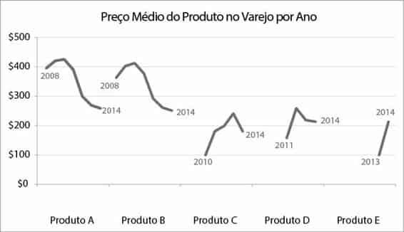
FIGURA 8.4 MUDE PARA UM GRÁFICO DE LINHAS
A Figura 8.4 permite ver mais claramente o que está acontecendo no decorrer do tempo, um produto por vez. Mas é difícil comparar os produtos em dado ponto no tempo. Representar todas as linhas no mesmo eixo x resolverá isso e também reduzirá a saturação e a redundância das várias legendas de ano. O gráfico resultante poderia ser como a Figura 8.5.
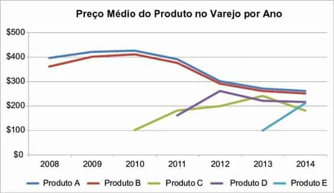
FIGURA 8.5 GRÁFICO DE LINHAS ÚNICO PARA TODOS OS PRODUTOS
Com a transição para a nova configuração de gráfico, o Excel adicionou novamente a cor que removemos em uma etapa anterior (vinculando os dados à legenda, embaixo). Vamos ignorar isso por um momento, enquanto consideramos se essa visão dos dados atenderá nossas necessidades. Lembre-se: nosso objetivo é entender como os preços dos concorrentes mudaram no decorrer do tempo. O modo como os dados estão mostrados na Figura 8.5 permite ver isso com relativa facilidade. Podemos facilitar ainda mais a obtenção dessa informação, eliminando a saturação e chamando a atenção para onde queremos.
A Figura 8.5 mostra como fica nosso visual quando contamos com as configurações padrão de nosso aplicativo de geração de gráficos (Excel).
Podemos melhorar isso com as seguintes alterações: Desenfatizar o título do gráfico. Ele precisa estar presente, mas não precisa chamar tanto a atenção quanto chama quando escrito em preto e em negrito.
Remover a borda e as linhas de grade do gráfico, que ocupam espaço sem acrescentar muito valor. Não permita que elementos desnecessários atrapalhem seus dados!
Colocar as linhas e legendas dos eixos x e y em segundo plano, tornando-os cinzas. Eles não devem competir visualmente com os dados. Modifique as marcas indicadoras do eixo x de modo que fiquem alinhadas com os pontos de dados.
Remover a variação nas cores entre as várias linhas. Podemos usar cor mais estrategicamente, o que vamos discutir mais adiante.
Legendar as linhas diretamente, eliminando o trabalho de ir e vir entre a legenda e os dados para saber o que está sendo mostrado.
A Figura 8.6 mostra como fica o gráfico depois dessas alterações.
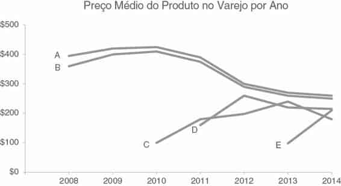
FIGURA 8.6 ELIMINE A SATURAÇÃO
A seguir, vamos explorar como podemos focar a atenção de nosso público.
Com a visão mostrada na Figura 8.6, podemos ver e comentar muito mais facilmente o que está acontecendo no decorrer do tempo. Vamos explorar como podemos enfocar diferentes aspectos dos dados, por meio do uso estratégico de atributos pré-atentivos.
Considere a manchete inicial: “O preço declinou para todos os produtos no mercado desde o lançamento do produto C, em 2010”. Observando a informação mais de perto, eu poderia modificá-la para dizer algo como:
“Após o lançamento do produto C, em 2010, o preço médio no varejo dos produtos existentes declinaram”. A Figura 8.7 demonstra como podemos vincular os pontos importantes nos dados a essas palavras, por meio do uso estratégico de cor.
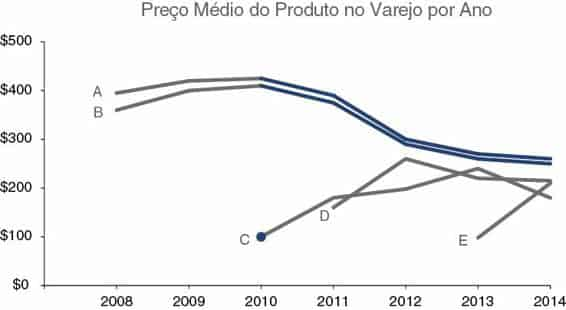
FIGURA 8.7 FOCALIZE A ATENÇÃO DO PÚBLICO
Na Figura 8.7, além dos segmentos coloridos das linhas, a atenção também é atraída à introdução do produto C em 2010, por meio da adição de um marcador de dados nesse ponto. Ele está visualmente vinculado ao decréscimo subsequente no decorrer do tempo para os produtos A e B, por meio do uso coerente de cor.
Normalmente, você formata uma série de dados (uma linha ou uma série de barras) tudo de uma vez. Contudo, às vezes pode ser útil ter certos pontos formatados de forma diferente — por exemplo, para chamar a atenção para partes específicas, como ilustrado nas Figuras 8.7, 8.8 e 8.9. Para fazer isso, clique uma vez na série de dados a fim de realçá-la e, então, clique novamente para realçar apenas o ponto de interesse. Clique com o botão direito do mouse e selecione Formatar Ponto de Dados para abrir o menu que permite formatar o ponto específico (por exemplo, mudar a cor ou adicionar um marcador de dados). Repita esse processo para cada ponto de dados que você queira modificar. Isso leva tempo, mas o visual resultante é mais fácil de compreender para seu público. É tempo bem gasto!
Podemos usar essa mesma visão e estratégia para nos concentrarmos em outra observação — talvez mais interessante e digna de nota: “Com o lançamento de um novo produto nessa área de atuação, é normal ver um aumento inicial no preço médio no varejo, seguido por um declínio”. Veja a Figura 8.8.
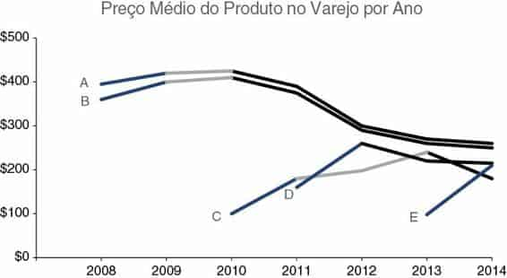
FIGURA 8.8 MUDE O FOCO DA ATENÇÃO DO PÚBLICO
Também pode ser interessante notar que “Em 2014, os preços no varejo convergiram entre os produtos, com um preço médio no varejo de $223, variando de um mínimo de $180 (produto C) até um máximo de $260 (produto A)”. A Figura 8.9 usa cor e marcadores de dados para chamar nossa atenção aos pontos específicos nos dados que corroboram essa observação.
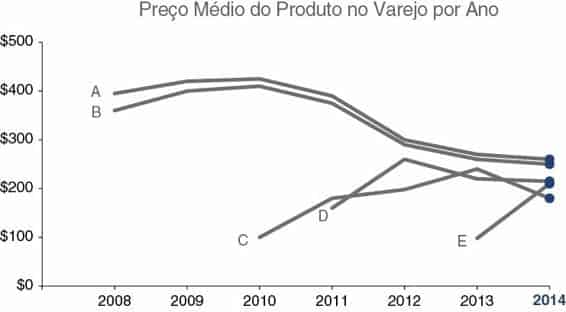
FIGURA 8.9 MUDE NOVAMENTE O FOCO DA ATENÇÃO DO PÚBLICO
A cada visão diferente dos dados, o uso de atributos pré-atentivos permite ver certas coisas mais claramente. Essa estratégia pode ser usada para realçar e contar diferentes partes de uma história com nuances.
Mas antes de continuarmos a pensar na melhor forma de contar a história, vamos colocar nosso chapéu de designers e aperfeiçoar o visual.
Embora talvez você não tenha reconhecido explicitamente, já estamos pensando como designers nesse processo. A forma segue a função: escolhemos um visual (forma) que permitirá ao nosso público fazer o que precisamos que faça (função) com facilidade. No que diz respeito ao uso de affordances visuais para tornar claro como nosso público deve interagir com nosso visual, já demos passos para cortar saturação e tirar a ênfase de alguns elementos do gráfico, enquanto enfatizamos e chamamos a atenção para outros.
Podemos melhorar ainda mais esse visual, aproveitando as lições abordadas no Capítulo 5, relacionadas à acessibilidade e à estética. Especificamente, podemos:
Tornar o visual acessível com texto. Podemos usar um texto mais simples no título do gráfico e usar maiúscula apenas na primeira letra da primeira palavra, para facilitar sua compreensão e agilizar sua leitura. Também precisamos acrescentar títulos nos eixos vertical e horizontal.
Alinhar elementos para melhorar a estética. O alinhamento centralizado do título do gráfico o deixa suspenso no espaço e não o alinha com nenhum outro elemento; devemos alinhar o título do gráfico no canto superior esquerdo. Alinhe o título do eixo y verticalmente com a legenda mais alta e o título do eixo x horizontalmente com a legenda mais à esquerda. Isso cria linhas mais limpas e garante que seu público saiba como interpretar o que está vendo, antes de chegar aos dados reais.
A Figura 8.10 mostra como o visual fica depois dessas alterações.
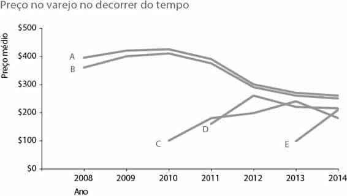
FIGURA 8.10 ADICIONE TEXTO E ALINHE OS ELEMENTOS
Finalmente, é hora de pensar em como podemos usar o visual que criamos na Figura 8.10 como base para conduzir nosso público pela história, da maneira como queremos que a experimente.
Imagine que tenhamos cinco minutos em um ambiente de apresentação ao vivo, com o seguinte tópico: “Panorama Competitivo — Fixação de Preço”.
A sequência a seguir (Figuras 8.11–8.19) ilustra um caminho que poderíamos tomar para contar uma história com esses dados.
FIGURA 8.11
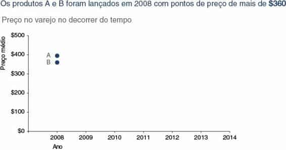
FIGURA 8.12
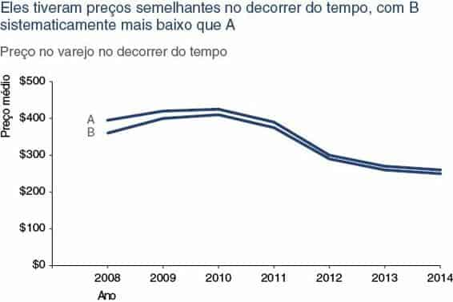
FIGURA 8.13
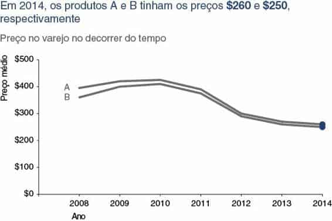
FIGURA 8.14
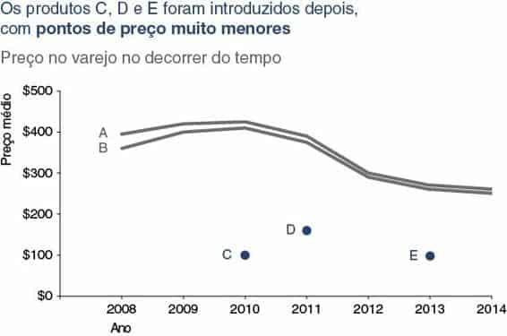
FIGURA 8.15
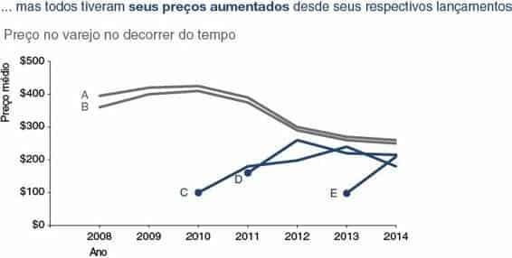
FIGURA 8.16
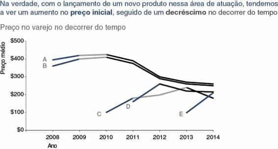
FIGURA 8.17
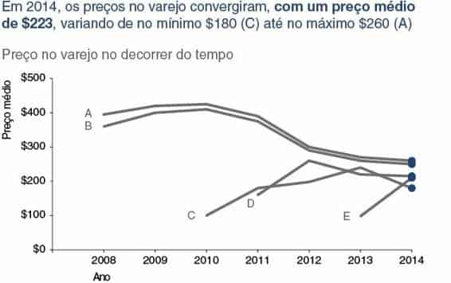
FIGURA 8.18
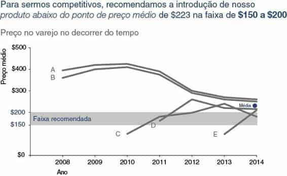
FIGURA 8.19
Vamos considerar essa progressão. Começamos dizendo ao nosso público qual estrutura seguiríamos. Posso imaginar a “narrativa oculta” na apresentação ao vivo estabelecendo a trama antes de passar para o próximo slide: “Como todos sabem, cinco produtos serão nossos principais concorrentes no mercado” — e então, construindo o caminho cronológico de preços que esses produtos seguiram. Podemos introduzir tensão no panorama competitivo quando os produtos C, D e E baixaram significativamente os pontos de preço existentes em seus respectivos lançamentos. Podemos então restaurar um senso de equilíbrio à medida que os preços convergem.
Terminamos com uma clara chamada para ação: a recomendação da fixação de preço de nosso produto.
Chamando a atenção de nosso público para a parte específica da história que queremos focalizar — ou apenas mostrando os pontos relevantes ou colocando outras coisas em segundo plano e enfatizando somente as partes relevantes e unindo a isso uma narrativa pensada —, o conduzimos pela história.
Vimos aqui um exemplo de como contar uma história com uma única apresentação. Esse mesmo processo e as lições individuais podem ser seguidos quando você tiver vários gráficos em uma apresentação ou comunicação mais ampla. Nesse caso, pense na história dominante que vincula tudo. As histórias individuais de determinada visualização dentro dessa apresentação maior, como vimos aqui, podem ser consideradas subtramas dentro do enredo mais amplo.
Por meio desse exemplo, vimos o processo do storytelling com dados do início ao fim. Começamos estabelecendo um sólido entendimento do contexto. Escolhemos um visual apropriado. Identificamos e eliminamos a saturação. Usamos atributos pré-atentivos para chamar a atenção de nosso público para o que queremos focalizar. Colocamos nossos chapéus de designers, adicionando texto para tornar nosso visual acessível, e empregamos alinhamento para melhorar a estética. Elaboramos uma narrativa convincente e contamos uma história.
Considere o “antes e depois” mostrado na Figura 8.20.
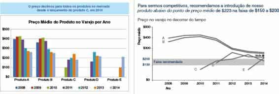
FIGURA 8.20 ANTES E DEPOIS
As lições que aprendemos e empregamos nos ajudam a mudar de simplesmente mostrar dados para o storytelling com dados.